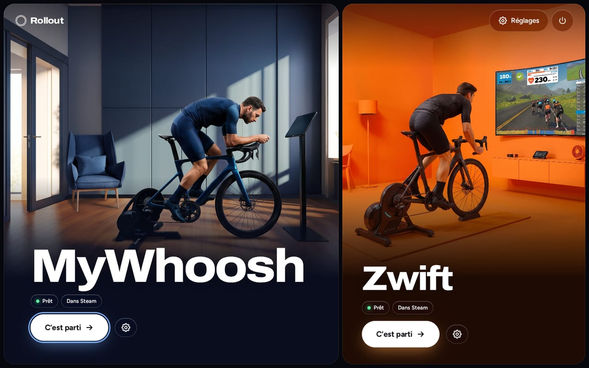
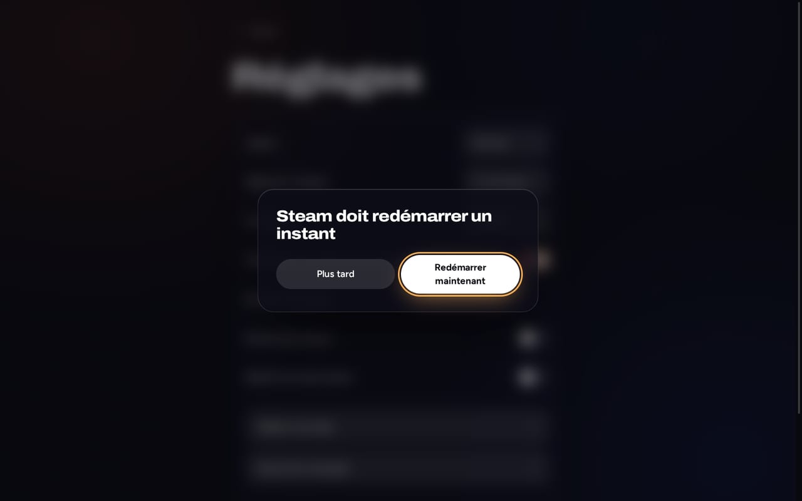

MyWhoosh
Bluetooth direct- Home trainer et ceinture cardio en Bluetooth, appairés dans le jeu comme sous Windows
- Fonctionne avec GE-Proton, téléchargé et vérifié pour toi
Rollout installe, met à jour et lance tes apps de vélo indoor. Télécharger, double-cliquer, rouler, le tout à la manette.
Bêta : testé sur ROG Ally avec Bazzite. Steam Deck pas encore vérifié.

Chaque app reçoit la configuration qui marche le mieux sous Linux. Rollout la choisit pour toi.
Chaque écran fonctionne à la manette, au toucher et au clavier. Les menus et les listes sont ceux de Rollout, donc ils marchent en Mode Jeu, là où les fenêtres natives échouent.
Pas de questions obligatoires, pas de terminal, pas de sudo. Rollout annonce la taille et la durée d’avance, puis des étapes claires avec progression.
Rollout peut se mettre à jour seul en arrière-plan. Chaque mise à jour du launcher est signée et testée au démarrage ; si elle échoue, Rollout revient tout seul à la dernière bonne version.
Un interrupteur ajoute Rollout et tes apps à Steam, avec des visuels. Lance tes sorties directement depuis le Mode Jeu ; le temps de jeu est conservé lors des mises à jour.

Pour MyWhoosh, le test Bluetooth montre quels home trainers et ceintures cardio émettent avant de te clipser, et redémarre un adaptateur bloqué.
Quand quelque chose se passe mal, Rollout dit en mots simples quoi faire ensuite, avec un bouton pour réessayer. Les détails seulement si tu les veux.
Derrière « Avancé » : version de Proton, sortie graphique, adaptateur Bluetooth, canal de mises à jour, journaux et diagnostic. Chaque option indique la valeur recommandée.
Choisis ton système, télécharge Rollout et ouvre-le en Mode Bureau. Pas besoin de terminal.
Bêta : testé sur ROG Ally avec Bazzite. Steam Deck pas encore vérifié.
Téléchargement bientôt disponible.
Zwift demande en plus Podman ou Docker, que SteamOS n’inclut généralement pas. MyWhoosh n’a besoin ni de l’un ni de l’autre.
Téléchargement bientôt disponible.
Podman est inclus, et Zwift en a besoin. Bazzite avec GNOME : les fichiers .desktop téléchargés ne se lancent pas par double-clic, cette installation ne fonctionne donc pas encore sur cette édition. Utilise l’édition KDE.
Autres distributions Linux : non prises en charge, à tes risques. Voir GitHub.
Rollout ne modifie pas les jeux. Il pilote des projets ouverts qui font déjà le gros du travail.
Les scripts des projets sont figés sur un commit précis et vérifiés avec SHA-256. Les mises à jour du launcher sont signées avec Ed25519.
Rollout vit dans ~/.local/share/rollout. L’installation n’exige pas de root et ne modifie aucun paquet système sur SteamOS ou Bazzite.
Zwift n’a pas de Bluetooth direct dans son conteneur, et aucun des deux jeux n’est officiellement pris en charge sous Linux. Rollout le dit au lieu de le cacher.
Sur Bazzite, oui : Zwift tourne dans un conteneur basé sur netbrain/zwift, que Rollout installe et lance. Rollout est testé sur un ROG Ally avec Bazzite ; le Steam Deck n’est pas encore vérifié. Sous SteamOS, il manque en général d’abord Podman ou Docker. Les capteurs se connectent via Zwift Companion sur le téléphone ou Direct Connect, pas directement en Bluetooth.
Oui. MyWhoosh fonctionne avec GE-Proton et parle directement en Bluetooth à ton home trainer et à ta ceinture cardio. Tu les appaires dans le jeu, comme sous Windows.
Oui, sous Bazzite. Installe Rollout en Mode Bureau, puis lance Zwift depuis Rollout ou depuis Steam en Mode Jeu. Ta manette pilote le jeu.
Non. Télécharge Rollout.desktop, double-clique dessus en Mode Bureau et confirme une fois. Rollout apparaît ensuite dans ton menu d’applications.
Oui. Rollout fonctionne à la manette, au toucher et au clavier. En Mode Jeu, ta manette pilote aussi Zwift.
Rollout cherche de nouvelles versions en arrière-plan et les installe automatiquement si tu le souhaites. Les mises à jour du launcher sont signées, et une mise à jour défectueuse est annulée toute seule.
Non. Rollout est un projet indépendant, sans lien avec Zwift, Inc., MyWhoosh ni Valve. Leurs conditions restreignent les outils tiers non autorisés, et ils peuvent suspendre des comptes à leur discrétion. Lis les conditions et décide par toi-même.
Rollout est en bêta. Il est testé sur un ROG Ally avec Bazzite. SteamOS sur le Steam Deck est la deuxième cible, mais pas encore vérifiée. Les autres distributions Linux sont à tes risques.